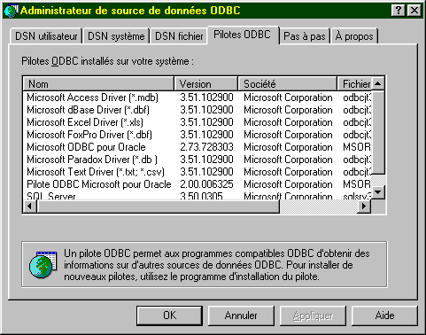
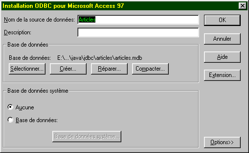
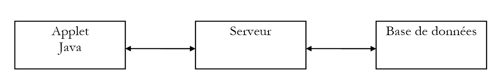
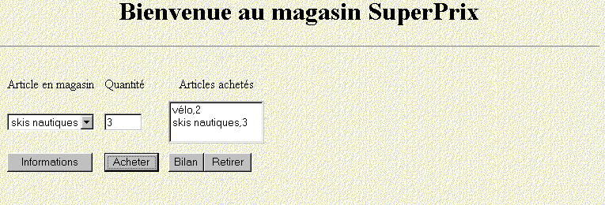

6. Gestão de bases de dados com a API JDBC
6.1. Visão geral
Existem muitas bases de dados no mercado. Para padronizar o acesso às bases de dados no MS Windows, a Microsoft desenvolveu uma interface chamada ODBC (Open DataBase Connectivity). Esta camada oculta as características específicas de cada base de dados por trás de uma interface padrão. Existem muitos controladores ODBC disponíveis no MS Windows que facilitam o acesso às bases de dados. Aqui, por exemplo, está uma lista de controladores ODBC instalados numa máquina com Win95:

Uma aplicação que utilize estes controladores pode utilizar qualquer uma das bases de dados acima referidas sem necessidade de alterações.

Para permitir que as aplicações Java também tirem partido da interface ODBC, a Sun criou a interface JDBC (Java Database Connectivity), que atua como intermediária entre a aplicação Java e a interface ODBC:

6.2. Etapas principais nas operações de base de dados
6.2.1. Introdução
Numa aplicação Java que utilize uma base de dados com a interface JDBC, estão geralmente envolvidas as seguintes etapas:
- Ligar-se à base de dados
- Envio de consultas SQL para a base de dados
- Receber e processar os resultados dessas consultas
- Fechar a ligação
Os passos 2 e 3 são executados repetidamente, sendo a ligação encerrada apenas no final das operações da base de dados. Este é um padrão relativamente comum com o qual poderá estar familiarizado se já tiver utilizado uma base de dados de forma interativa. Iremos detalhar cada um destes passos utilizando um exemplo. Consideraremos uma base de dados Access denominada ARTICLES com a seguinte estrutura:
nome | tipo |
código | código do artigo de 4 caracteres |
nome | o seu nome (cadeia de caracteres) |
preço | o seu preço (real) |
stock_atual | stock atual (inteiro) |
stock_mínimo | o stock mínimo (número inteiro) abaixo do qual o artigo deve ser reabastecido |
Esta base de dados ACCESS está definida como uma fonte de dados «utilizador» no Gestor de Bases de Dados ODBC:


As suas propriedades são definidas através do botão «Configurar», da seguinte forma:

Esta configuração envolve essencialmente associar a base de dados ARTICLES ao ficheiro do Access articles.mdb correspondente a esta base de dados. Uma vez feito isto, a base de dados ARTICLES fica acessível às aplicações que utilizam a interface ODBC.
6.2.2. A etapa de ligação
Para utilizar uma base de dados, uma aplicação Java deve primeiro estabelecer uma ligação. Isto é feito utilizando o seguinte método de classe:
onde
DriverManager: uma classe Java que contém a lista de controladores disponíveis para a aplicação
Conexão: uma classe Java que estabelece uma ligação entre a aplicação e a base de dados, através da qual a aplicação enviará consultas SQL para a base de dados e receberá resultados
URL: nome que identifica a base de dados. Este nome é análogo aos URLs da Internet. É por isso que faz parte da classe URL. No entanto, a Internet não está de todo envolvida aqui. O URL tem o seguinte formato:
**jdbc:nome\_do\_driver:nome\_da\_fonte;param=val1;param2=val2**
Nos nossos exemplos, onde utilizaremos apenas controladores ODBC, o controlador chama-se **odbc**. A terceira parte da URL consiste no nome da fonte e em quaisquer parâmetros. Nos nossos exemplos, estas serão fontes ODBC conhecidas pelo sistema. Assim, a URL para a fonte de dados *Articles* definida anteriormente será
**jdbc:odbc:Articles**
id: ID do utilizador (login)
mdp: Palavra-passe do utilizador
Em resumo, o programa liga-se a uma base de dados:
- identificada por um nome (URL)
- com as credenciais de um utilizador (ID, palavra-passe)
Se estes três parâmetros estiverem corretos e se existir um controlador capaz de estabelecer a ligação entre a aplicação Java e a base de dados especificada, então é estabelecida uma ligação entre a aplicação Java e a base de dados. Esta ligação é representada no programa pelo objeto Connection devolvido pela classe DriverManager. Uma vez que esta ligação pode falhar por várias razões, pode lançar uma exceção. Por isso, escreveremos:
Connection connexion=null;
URL base=...;
String id=...;
String mdp=...;
try{
connexion=DriverManager.getConnection(base,id,mdp);
} catch (Exception e){
// traiter l’exception
}
Para se ligar a uma base de dados, é necessário dispor do controlador adequado. Nos nossos exemplos, este será o controlador ODBC capaz de gerir a base de dados solicitada. Embora este controlador deva estar disponível na lista de controladores ODBC da máquina, é também necessário dispor da classe Java que irá interagir com ele. Para tal, a aplicação irá solicitar a classe necessária da seguinte forma:
A classe Class não está de forma alguma relacionada com a interface JDBC. Trata-se de uma classe de gestão geral de classes. O seu método estático forName permite que uma classe seja carregada dinamicamente, tornando assim disponíveis os seus atributos e métodos estáticos. A classe que faz a interface com os controladores ODBC do MS Windows chama-se “sun.jdbc.odbc.JdbcOdbcDriver”. Escreveríamos, portanto, (o método pode lançar uma exceção):
try{
Class.forName(« sun.jdbc.odbc.JdbcOdbcDriver ») ;
} catch (Exception e){
// handle exception (non-existent class)
}
As classes necessárias para a interface JDBC encontram-se no pacote java.sql. Por isso, no início do programa, escrevemos:
Eis um programa que permite ligar-se a uma base de dados:
import java.sql.*;
import java.io.*;
// call: pg PILOTE URL UID MDP
// connects to the URL database using class JDBC PILOTE
// user UID is identified by password MDP
public class connexion1{
static String syntaxe="pg PILOTE URL UID MDP";
public static void main(String arg[]){
// check number of arguments
if(arg.length<2 || arg.length>4)
erreur(syntaxe,1);
// connection to base
Connection connect=null;
String uid="";
String mdp="";
if(arg.length>=3) uid=arg[2];
if(arg.length==4) mdp=arg[3];
try{
Class.forName(arg[0]);
connect=DriverManager.getConnection(arg[1],uid,mdp);
System.out.println("Connexion avec la base " + arg[1] + " établie");
} catch (Exception e){
erreur("Erreur " + e,2);
}
// closing the base
try{
connect.close();
System.out.println("Base " + arg[1] + " fermée");
} catch (Exception e){}
}// hand
public static void erreur(String msg, int exitCode){
System.err.println(msg);
System.exit(exitCode);
}
}// class
Aqui está um exemplo de execução:
E:\data\java\jdbc\0>java connexion1 sun.jdbc.odbc.JdbcOdbcDriver jdbc:odbc:articles
Connexion avec la base jdbc:odbc:articles établie
Base jdbc:odbc:articles fermée
6.2.3. Envio de consultas à base de dados
A interface JDBC permite o envio de consultas SQL para a base de dados ligada à aplicação Java, bem como o processamento dos resultados dessas consultas. SQL (Structured Query Language) é uma linguagem de consulta padronizada para bases de dados relacionais. Existem vários tipos de consultas:
- instruções de consulta à base de dados (SELECT)
- consultas de atualização da base de dados (INSERT, DELETE, UPDATE)
- consultas para criar/eliminar tabelas (CREATE, DELETE)
Partimos do princípio de que o leitor está familiarizado com os conceitos básicos da linguagem SQL.
6.2.3.1. A classe Statement
Para enviar qualquer consulta SQL a uma base de dados, a aplicação Java deve possuir um objeto do tipo Statement. Este objeto armazenará, entre outras coisas, o texto da consulta. Este objeto está necessariamente ligado à ligação atual. É, portanto, um método da ligação estabelecida que permite criar os objetos Statement necessários para emitir consultas SQL. Se connection é o objeto que representa a ligação à base de dados, um objeto Statement é obtido da seguinte forma:
Depois de obtido um objeto Statement, as consultas SQL podem ser executadas. Isto é feito de forma diferente, dependendo se a consulta se destina a recuperar dados ou a atualizar a base de dados.
6.2.3.2. Executar uma consulta para recuperar dados da base de dados
Uma consulta é normalmente do seguinte tipo:
Apenas as palavras-chave na primeira linha são obrigatórias; as restantes são opcionais. Existem outras palavras-chave que não são apresentadas aqui.
- É realizada uma junção com todas as tabelas listadas após a palavra-chave `FROM`
- Apenas as colunas que se seguem à palavra-chave `select` são mantidas
- Apenas as linhas que satisfazem a condição da palavra-chave `where` são mantidas
- As linhas resultantes, ordenadas de acordo com a expressão na palavra-chave `ORDER BY`, formam o resultado da consulta.
O resultado de um SELECT é uma tabela. Se considerarmos a tabela ARTICLES anterior e quisermos os nomes dos artigos cujo stock atual está abaixo do limite mínimo, escreveríamos: SELECT name FROM articles WHERE current\_stock < min\_stock*. Se quisermos que sejam ordenados alfabeticamente por nome, escreveríamos: select name from articles where current_stock < minimum_stock order by name*
Para executar este tipo de consulta, a classe Statement fornece o método executeQuery:
onde query é o texto da consulta SELECT a ser executada.
Assim, se
- connection é o objeto que representa a ligação à base de dados
- Statement s = connection.createStatement() cria o objeto Statement necessário para executar consultas SQL
- ResultSet rs = s.executeQuery("select name from articles where current_stock < minimum_stock") executa uma consulta SELECT e atribui as linhas de resultado da consulta a um objeto do tipo ResultSet.
6.2.3.3. A classe ResultSet: resultado de uma consulta SELECT
Um objeto ResultSet representa uma tabela, ou seja, um conjunto de linhas e colunas. Em qualquer momento, apenas uma linha da tabela está acessível, conhecida como a linha atual. Após a criação inicial do ResultSet, a linha atual é a linha n.º 1, se o ResultSet não estiver vazio. Para avançar para a linha seguinte, a classe ResultSet fornece o método next:
Este método tenta avançar para a linha seguinte no ResultSet e devolve true se for bem-sucedido, false caso contrário. Se for bem-sucedido, a linha seguinte torna-se a nova linha atual. A linha anterior é perdida e não pode ser recuperada. A tabela ResultSet tem as colunas col1, col2, ... Para aceder aos vários campos da linha atual, estão disponíveis os seguintes métodos:
para recuperar o campo "coli" da linha atual. Type refere-se ao tipo do campo coli. O método getString é frequentemente utilizado em todos os campos, o que permite recuperar o conteúdo do campo como uma string. Pode então convertê-lo, se necessário. Se não souber o nome da coluna, pode utilizar os métodos
onde i é o índice da coluna pretendida (i>=1).
6.2.3.4. Um primeiro exemplo
Aqui está um programa que apresenta o conteúdo da base de dados ARTICLES criada anteriormente:
import java.sql.*;
import java.io.*;
// displays the contents of a ARTICLES system database
public class articles1{
static final String DB="ARTICLES"; // database to exploit
public static void main(String arg[]){
Connection connect=null; // connection to base
Statement S=null; // purpose of queries
ResultSet RS=null; // query result table
try{
// base connection
Class.forName("sun.jdbc.odbc.JdbcOdbcDriver");
connect=DriverManager.getConnection("jdbc:odbc:"+DB,"","");
System.out.println("Connexion avec la base " + DB + " établie");
// creation of a Statement object
S=connect.createStatement();
// execute a select query
RS=S.executeQuery("select * from " + DB);
// using the results table
while(RS.next()){ // as long as there's a line to operate
// it is displayed on screen
System.out.println(RS.getString("code")+","+
RS.getString("nom")+","+
RS.getString("prix")+","+
RS.getString("stock_actu")+","+
RS.getString("stock_mini"));
}// next line
} catch (Exception e){
erreur("Erreur " + e,2);
}
// closing the base
try{
connect.close();
System.out.println("Base " + DB + " fermée");
} catch (Exception e){}
}// hand
public static void erreur(String msg, int exitCode){
System.err.println(msg);
System.exit(exitCode);
}
}// class
Os resultados são os seguintes:
Connexion avec la base ARTICLES établie
a300,vélo,1202,30,2
d600,arc,5000,10,2
d800,canoé,1502,12,6
x123,fusil,3000,10,2
s345,skis nautiques,1800,3,2
f450,essai3,3,3,3
f807,cachalot,200000,0,0
z400,léopard,500000,1,1
g457,panthère,800000,1,1
Base ARTICLES fermée
6.2.3.5. A classe ResultSetMetadata
No exemplo anterior, conhecemos os nomes das colunas do ResultSet. Se não os conhecermos, não podemos utilizar o método getType(nome_da_coluna). Em vez disso, utilizamos getType(número_da_coluna). No entanto, para obter todas as colunas, precisaríamos de saber quantas colunas o ResultSet possui. A classe ResultSet não fornece esta informação. É a classe ResultSetMetaData que a fornece. De forma mais geral, esta classe fornece informações sobre a estrutura da tabela, ou seja, a natureza das suas colunas.
Acedemos às informações sobre a estrutura de um ResultSet instanciando primeiro um objeto ResultSetMetaData. Se RS for um ResultSet, o ResultSetMetaData associado é obtido através de:
Existem dois métodos úteis na classe ResultSetMetaData:
- int getColumnCount(), que devolve o número de colunas no ResultSet
- String getColumnLabel(int i), que devolve o nome da coluna i no ResultSet (i >= 1)
6.2.3.6. Um segundo exemplo
O programa anterior apresentava o conteúdo da base de dados ARTICLES. Aqui, escrevemos um programa que executa qualquer consulta SQL SELECT que o utilizador digite no teclado na base de dados ARTICLES.
import java.sql.*;
import java.io.*;
// displays the contents of a ARTICLES system database
public class sql1{
static final String DB="ARTICLES"; // database to exploit
public static void main(String arg[]){
Connection connect=null; // connection to base
Statement S=null; // purpose of queries
ResultSet RS=null; // query result table
String select; // query text SQL select
int nbColonnes; // no. of columns in ResultSet
// creation of a keyboard input stream
BufferedReader in=null;
try{
in=new BufferedReader(new InputStreamReader(System.in));
} catch(Exception e){
erreur("erreur lors de l'ouverture du flux clavier ("+e+")",3);
}
try{
// base connection
Class.forName("sun.jdbc.odbc.JdbcOdbcDriver");
connect=DriverManager.getConnection("jdbc:odbc:"+DB,"","");
System.out.println("Connexion avec la base " + DB + " établie");
// creation of a Statement object
S=connect.createStatement();
// execution loop for SQL requests typed on keyboard
System.out.print("Requête : ");
select=in.readLine();
while(!select.equals("fin")){
// query execution
RS=S.executeQuery(select);
// number of columns
nbColonnes=RS.getMetaData().getColumnCount();
// using the results table
System.out.println("Résultats obtenus\n\n");
while(RS.next()){ // as long as there's a line to operate
// it is displayed on screen
for(int i=1;i<nbColonnes;i++)
System.out.print(RS.getString(i)+",");
System.out.println(RS.getString(nbColonnes));
}// next line
// following request
System.out.print("Requête : ");
select=in.readLine();
}// while
} catch (Exception e){
erreur("Erreur " + e,2);
}
// closing the base and input stream
try{
connect.close();
System.out.println("Base " + DB + " fermée");
in.close();
} catch (Exception e){}
}// hand
public static void erreur(String msg, int exitCode){
System.err.println(msg);
System.exit(exitCode);
}
}// class
Eis alguns dos resultados obtidos:
Connexion avec la base ARTICLES établie
Requête : select * from articles order by prix desc
Résultats obtenus
g457,panthère,800000,1,1
z400,léopard,500000,1,1
f807,cachalot,200000,0,0
d600,arc,5000,10,2
x123,fusil,3000,10,2
s345,skis nautiques,1800,3,2
d800,canoé,1502,12,6
a300,vélo,1202,30,2
f450,essai3,3,3,3
Requête : select nom, prix from articles where prix >10000 order by prix desc
Résultats obtenus
panthère,800000
léopard,500000
cachalot,200000
6.2.3.7. Executar uma consulta de atualização da base de dados
Um objeto Statement é utilizado para armazenar consultas SQL. O método que este objeto utiliza para executar consultas de atualização SQL (INSERT, UPDATE, DELETE) já não é o método executeQuery discutido anteriormente, mas sim o método executeUpdate:
A diferença reside no resultado: enquanto o executeQuery devolvia o conjunto de resultados (ResultSet), o executeUpdate devolve o número de linhas afetadas pela operação de atualização.
6.2.3.8. Um terceiro exemplo
Vamos revisitar o programa anterior e modificá-lo ligeiramente: as consultas digitadas no teclado são agora consultas de atualização para a base de dados ARTICLES.
import java.sql.*;
import java.io.*;
// displays the contents of a ARTICLES system database
public class sql2{
static final String DB="ARTICLES"; // database to exploit
public static void main(String arg[]){
Connection connect=null; // connection to base
Statement S=null; // purpose of queries
ResultSet RS=null; // query result table
String sqlUpdate; // text of SQL update request
int nbLignes; // no. of lines affected by an update
// creation of a keyboard input stream
BufferedReader in=null;
try{
in=new BufferedReader(new InputStreamReader(System.in));
} catch(Exception e){
erreur("erreur lors de l'ouverture du flux clavier ("+e+")",3);
}
try{
// base connection
Class.forName("sun.jdbc.odbc.JdbcOdbcDriver");
connect=DriverManager.getConnection("jdbc:odbc:"+DB,"","");
System.out.println("Connexion avec la base " + DB + " établie");
// creation of a Statement object
S=connect.createStatement();
// execution loop for SQL requests typed on keyboard
System.out.print("Requête : ");
sqlUpdate=in.readLine();
while(!sqlUpdate.equals("fin")){
// query execution
nbLignes=S.executeUpdate(sqlUpdate);
// follow-up
System.out.println(nbLignes + " ligne(s) ont été mises à jour");
// following request
System.out.print("Requête : ");
sqlUpdate=in.readLine();
}// while
} catch (Exception e){
erreur("Erreur " + e,2);
}
// closing the base and input stream
try{
// free up resources linked to the base
RS.close();
S.close();
connect.close();
System.out.println("Base " + DB + " fermée");
// keyboard flow closure
in.close();
} catch (Exception e){}
}// hand
public static void erreur(String msg, int exitCode){
System.err.println(msg);
System.exit(exitCode);
}
}// class
Aqui estão os resultados de várias execuções dos programas sql1 e sql2:
Lista de linhas na base de dados ARTICLES:
E:\data\java\jdbc\0>java sql1
Connexion avec la base ARTICLES établie
Requête : select nom,stock_actu from articles
Résultats obtenus
vélo,30
arc,10
canoé,12
fusil,10
skis nautiques,3
essai3,3
cachalot,0
léopard,1
panthère,1
Modificamos algumas linhas:
E:\data\java\jdbc\0>java sql2
Connexion avec la base ARTICLES établie
Requête : update articles set stock_actu=stock_actu+1 where stock_actu>10
2 ligne(s) ont été mises à jour
Verificação:
E:\data\java\jdbc\0>java sql1
Connexion avec la base ARTICLES établie
Requête : select nom,stock_actu from articles
Résultats obtenus
vélo,31
arc,10
canoé,13
fusil,10
skis nautiques,3
essai3,3
cachalot,0
léopard,1
panthère,1
Adicionar uma linha:
E:\data\java\jdbc\0>java sql2
Connexion avec la base ARTICLES établie
Requête : insert into articles (code,nom,prix,stock_actu,stock_mini) values ('x400','nouveau',200,20,10)
1 ligne(s) ont été mises à jour
Verificação:
E:\data\java\jdbc\0>java sql1
Connexion avec la base ARTICLES établie
Requ_te : select nom,stock_actu from articles
Résultats obtenus
vélo,31
arc,10
canoé,13
fusil,10
skis nautiques,3
essai3,3
cachalot,0
léopard,1
panthère,1
nouveau,20
Eliminar uma linha:
E:\data\java\jdbc\0>java sql2
Connexion avec la base ARTICLES établie
Requête : delete from articles where code='x400'
1 ligne(s) ont été mises à jour
Requête : fin
Verificação:
E:\data\java\jdbc\0>java sql1
Connexion avec la base ARTICLES établie
Requête : select nom,stock_actu from articles
Résultats obtenus
vélo,31
arc,10
cano_,13
fusil,10
skis nautiques,3
essai3,3
cachalot,0
léopard,1
panthère,1
6.2.3.9. Executar qualquer consulta SQL
O objeto Statement necessário para executar consultas SQL possui um método execute capaz de executar qualquer tipo de consulta SQL:
O valor devolvido é o booleano true se a consulta devolveu um ResultSet* (executeQuery*), e false se devolveu um número (executeUpdate*). O ResultSet resultante pode ser recuperado utilizando o método getResultSet, e o número de linhas atualizadas utilizando o método getUpdateCount*. Assim, escreveríamos:
Statement S=...;
ResultSet RS=...;
int nbLignes;
String requête=...;
// exécution d’une requête SQL
if (S.execute(requête)){
// on a un resultset
RS=S.getResultSet();
// exploitation du ResultSet
...
} else {
// c’était une requête de mise à jour
nbLignes=S.getUpdateCount();
...
}
6.2.3.10. Quarto exemplo
Pegamos no conceito dos programas sql1 e sql2 e aplicamo-lo a um programa sql3 que agora pode executar qualquer consulta SQL digitada no teclado. Para tornar o programa mais geral, as características da base de dados a ser utilizada são passadas como parâmetros para o programa.
import java.sql.*;
import java.io.*;
// call: pg PILOTE URL UID MDP
// connects to the URL database using class JDBC PILOTE
// user UID is identified by password MDP
public class sql3{
static String syntaxe="pg PILOTE URL UID MDP";
public static void main(String arg[]){
// check number of arguments
if(arg.length<2 || arg.length>4)
erreur(syntaxe,1);
// init connection parameters
Connection connect=null;
String uid="";
String mdp="";
if(arg.length>=3) uid=arg[2];
if(arg.length==4) mdp=arg[3];
// other data
Statement S=null; // purpose of queries
ResultSet RS=null; // result table of a query request
String sqlText; // text of query SQL to be executed
int nbLignes; // no. of lines affected by an update
int nbColonnes; // nb of columns in a ResultSet
// creation of a keyboard input stream
BufferedReader in=null;
try{
in=new BufferedReader(new InputStreamReader(System.in));
} catch(Exception e){
erreur("erreur lors de l'ouverture du flux clavier ("+e+")",3);
}
try{
// base connection
Class.forName(arg[0]);
connect=DriverManager.getConnection(arg[1],uid,mdp);
System.out.println("Connexion avec la base " + arg[1] + " établie");
// creation of a Statement object
S=connect.createStatement();
// execution loop for SQL requests typed on keyboard
System.out.print("Requête : ");
sqlText=in.readLine();
while(!sqlText.equals("fin")){
// query execution
try{
if(S.execute(sqlText)){
// we have obtained a ResultSet - we exploit it
RS=S.getResultSet();
// number of columns
nbColonnes=RS.getMetaData().getColumnCount();
// using the results table
System.out.println("\nRésultats obtenus\n-----------------\n");
while(RS.next()){ // as long as there's a line to operate
// it is displayed on screen
for(int i=1;i<nbColonnes;i++)
System.out.print(RS.getString(i)+",");
System.out.println(RS.getString(nbColonnes));
}// next line of ResultSet
} else {
// it was an update request
nbLignes=S.getUpdateCount();
// follow-up
System.out.println(nbLignes + " ligne(s) ont été mises à jour");
}//if
} catch (Exception e){
System.out.println("Erreur " +e);
}
// following request
System.out.print("\nNouvelle Requête : ");
sqlText=in.readLine();
}// while
} catch (Exception e){
erreur("Erreur " + e,2);
}
// closing the base and input stream
try{
// free up resources linked to the base
RS.close();
S.close();
connect.close();
System.out.println("Base " + arg[1] + " fermée");
// keyboard flow closure
in.close();
} catch (Exception e){}
}// hand
public static void erreur(String msg, int exitCode){
System.err.println(msg);
System.exit(exitCode);
}
}// class
Criamos o seguinte ficheiro de consulta:
select * from articles
update articles set stock_mini=stock_mini+5 where stock_mini<5
select nom,stock_mini from articles
insert into articles (code,nom,prix,stock_actu,stock_mini) values ('x400','nouveau',100,20,10)
select * from articles
delete from articles where code='x400'
select * from articles
fin
O programa é executado da seguinte forma:
O programa lê a sua entrada a partir do ficheiro de consultas e grava a sua saída no ficheiro de resultados. Os resultados obtidos são os seguintes:
Connexion avec la base jdbc:odbc:articles établie
Requête : (requete 1 du fichier des requetes : select * from articles)
Résultats obtenus
-----------------
a300,vélo,1202,31,3
d600,arc,5000,10,3
d800,canoé,1502,13,7
x123,fusil,3000,10,3
s345,skis nautiques,1800,3,3
f450,essai3,3,3,4
f807,cachalot,200000,0,1
z400,léopard,500000,1,2
g457,panthère,800000,1,2
Nouvelle Requête : (requete 2 du fichier des requetes : update articles set stock_mini=stock_mini+5 where stock_mini<5)
8 ligne(s) ont été mises à jour
Nouvelle Requête : (requete 3 du fichier des requetes : select nom,stock_mini from articles)
Résultats obtenus
-----------------
vélo,8
arc,8
canoé,7
fusil,8
skis nautiques,8
essai3,9
cachalot,6
léopard,7
panthère,7
Nouvelle Requête : (requete 4 du fichier des requetes : insert into articles (code,nom,prix,stock_actu,stock_mini) values ('x400','nouveau',100,20,10))
1 ligne(s) ont été mises à jour
Nouvelle Requête : (requete 5 du fichier des requetes : select * from articles)
Résultats obtenus
-----------------
a300,vélo,1202,31,8
d600,arc,5000,10,8
d800,canoé,1502,13,7
x123,fusil,3000,10,8
s345,skis nautiques,1800,3,8
f450,essai3,3,3,9
f807,cachalot,200000,0,6
z400,léopard,500000,1,7
g457,panthère,800000,1,7
x400,nouveau,100,20,10
Nouvelle Requête : (requete 6 du fichier des requêtes : delete from articles where code='x400')
1 ligne(s) ont été mises à jour
Nouvelle Requête : (requete 7 du fichier des requêtes : select * from articles)
Résultats obtenus
-----------------
a300,vélo,1202,31,8
d600,arc,5000,10,8
d800,canoé,1502,13,7
x123,fusil,3000,10,8
s345,skis nautiques,1800,3,8
f450,essai3,3,3,9
f807,cachalot,200000,0,6
z400,léopard,500000,1,7
g457,panthère,800000,1,7
6.3. Cálculo de impostos com uma base de dados
Da última vez que abordámos o problema do cálculo de impostos, utilizámos uma interface gráfica e os dados foram armazenados num ficheiro. Vamos revisitar esta versão, partindo agora do princípio de que os dados se encontram numa base de dados ODBC-MySQL. O MySQL é um SGBD de código aberto que pode ser utilizado em várias plataformas, incluindo Windows e Linux. Com este SGBD, foi criada uma base de dados denominada dbimpots, contendo uma única tabela chamada impots. O acesso à base de dados é controlado por um nome de utilizador/palavra-passe, neste caso admimpots/mdpimpots. A captura de ecrã mostra como utilizar a base de dados dbimpots com o MySQL:
C:\Program Files\EasyPHP\mysql\bin>mysql -u admimpots -p
Enter password: *********
Welcome to the MySQL monitor. Commands end with ; or \g.
Your MySQL connection id is 18 to server version: 3.23.49-max-nt
Type 'help;' or '\h' for help. Type '\c' to clear the buffer.
mysql> use dbimpots;
Database changed
mysql> show tables;
+--------------------+
| Tables_in_dbimpots |
+--------------------+
| impots |
+--------------------+
1 row in set (0.00 sec)
mysql> describe impots;
+---------+--------+------+-----+---------+-------+
| Field | Type | Null | Key | Default | Extra |
+---------+--------+------+-----+---------+-------+
| limites | double | YES | | NULL | |
| coeffR | double | YES | | NULL | |
| coeffN | double | YES | | NULL | |
+---------+--------+------+-----+---------+-------+
3 rows in set (0.02 sec)
mysql> select * from impots;
+---------+--------+---------+
| limites | coeffR | coeffN |
+---------+--------+---------+
| 12620 | 0 | 0 |
| 13190 | 0.05 | 631 |
| 15640 | 0.1 | 1290.5 |
| 24740 | 0.15 | 2072.5 |
| 31810 | 0.2 | 3309.5 |
| 39970 | 0.25 | 4900 |
| 48360 | 0.3 | 6898 |
| 55790 | 0.35 | 9316.5 |
| 92970 | 0.4 | 12106 |
| 127860 | 0.45 | 16754 |
| 151250 | 0.5 | 23147.5 |
| 172040 | 0.55 | 30710 |
| 195000 | 0.6 | 39312 |
| 0 | 0.65 | 49062 |
+---------+--------+---------+
14 rows in set (0.00 sec)
mysql>quit
A interface gráfica da aplicação é a seguinte:

A interface gráfica sofreu algumas alterações:
N.º | tipo | nome | função |
1 | JTextField | txtConnection | Cadeia de ligação à base de dados ODBC |
2 | JScrollPane | JScrollPane1 | recipiente para a área de texto 3 |
3 | JTextArea | txtStatus | exibe mensagens de estado, incluindo mensagens de erro |
A cadeia de ligação introduzida em (1) tem o seguinte formato: DSN;login;password com
sendo o nome DSN da fonte de dados ODBC | |
a identidade de um utilizador com acesso de leitura à base de dados | |
a sua palavra-passe |
A base de dados dbimpots foi criada manualmente utilizando o MySQL. É convertida numa fonte de dados ODBC da seguinte forma:
- Inicie o Administrador de Fontes de Dados ODBC de 32 bits

- utilize o botão [Adicionar] para adicionar uma nova fonte de dados ODBC

- Selecione o controlador MySQL e clique em [Concluir]

- O controlador MySQL solicita algumas informações:
1 | O nome do DSN a atribuir à fonte de dados ODBC — pode ser qualquer nome |
2 | a máquina na qual o SGBD MySQL está a ser executado — neste caso, localhost. Vale a pena referir que a base de dados pode ser uma base de dados remota. As aplicações locais que utilizam a fonte de dados ODBC não notariam isso. Este seria o caso, em particular, da nossa aplicação Java. |
3 | a base de dados MySQL a utilizar. O MySQL é um SGBD que gere bases de dados relacionais, que são conjuntos de tabelas ligadas entre si por relações. Aqui, especificamos o nome da base de dados que está a ser gerida. |
4 | O nome de um utilizador com direitos de acesso a esta base de dados |
5 | a sua palavra-passe |
Depois de definida a fonte de dados ODBC, podemos testar o nosso programa:
 |  |
Vamos dar uma olhada no código que foi modificado em comparação com a versão gráfica sem base de dados. Aqui está o código da classe *impots* utilizada até agora:
// creation of an impots class
public class impots{
// data required for tax calculation
// come from an external source
private double[] limites, coeffR, coeffN;
// manufacturer
public impots(double[] LIMITES, double[] COEFFR, double[] COEFFN) throws Exception{
// check that the 3 arrays have the same size
boolean OK=LIMITES.length==COEFFR.length && LIMITES.length==COEFFN.length;
if (! OK) throw new Exception ("Les 3 tableaux fournis n'ont pas la même taille("+
LIMITES.length+","+COEFFR.length+","+COEFFN.length+")");
// it's good
this.limites=LIMITES;
this.coeffR=COEFFR;
this.coeffN=COEFFN;
}//manufacturer
// tAX CALCULATION
public long calculer(boolean marié, int nbEnfants, int salaire){
// calculating the number of shares
double nbParts;
if (marié) nbParts=(double)nbEnfants/2+2;
else nbParts=(double)nbEnfants/2+1;
if (nbEnfants>=3) nbParts+=0.5;
// calculation of taxable income & family quota
double revenu=0.72*salaire;
double QF=revenu/nbParts;
// tAX CALCULATION
limites[limites.length-1]=QF+1;
int i=0;
while(QF>limites[i]) i++;
// return result
return (long)(revenu*coeffR[i]-nbParts*coeffN[i]);
}//calculate
}//class
Esta classe constrói as três matrizes limits, coeffR e coeffN a partir de três matrizes passadas como parâmetros ao seu construtor. Decidimos adicionar um novo construtor que nos permita construir as mesmas três matrizes a partir de uma base de dados:
public impots(String dsnIMPOTS, String userIMPOTS, String mdpIMPOTS)
throws SQLException,ClassNotFoundException{
// dsnIMPOTS: DSN database name
// userIMPOTS, mdpIMPOTS: database login/password
Para este exemplo, decidimos não implementar este novo construtor na classe *impots,* mas sim numa classe derivada, *impotsJDBC*:
// imported packages
import java.sql.*;
import java.util.*;
public class impotsJDBC extends impots{
// addition of a constructor for building
// limit tables, coeffr, coeffn from table
// database taxes
public impotsJDBC(String dsnIMPOTS, String userIMPOTS, String mdpIMPOTS)
throws SQLException,ClassNotFoundException{
// dsnIMPOTS: DSN database name
// userIMPOTS, mdpIMPOTS: database login/password
// data tables
ArrayList aLimites=new ArrayList();
ArrayList aCoeffR=new ArrayList();
ArrayList aCoeffN=new ArrayList();
// connection to base
Class.forName("sun.jdbc.odbc.JdbcOdbcDriver");
Connection connect=DriverManager.getConnection("jdbc:odbc:"+dsnIMPOTS,userIMPOTS,mdpIMPOTS);
// creation of a Statement object
Statement S=connect.createStatement();
// select request
String select="select limites, coeffr, coeffn from impots";
// query execution
ResultSet RS=S.executeQuery(select);
while(RS.next()){
// running line operation
aLimites.add(RS.getString("limites"));
aCoeffR.add(RS.getString("coeffr"));
aCoeffN.add(RS.getString("coeffn"));
}// next line
// closing resources
RS.close();
S.close();
connect.close();
// data transfer to bounded arrays
int n=aLimites.size();
limites=new double[n];
coeffR=new double[n];
coeffN=new double[n];
for(int i=0;i<n;i++){
limites[i]=Double.parseDouble((String)aLimites.get(i));
coeffR[i]=Double.parseDouble((String)aCoeffR.get(i));
coeffN[i]=Double.parseDouble((String)aCoeffN.get(i));
}//for
}//manufacturer
}//class
O construtor lê o conteúdo da tabela «imports» da base de dados que lhe é passada como parâmetros e preenche as três matrizes: «limites», «coeffR» e «coeffN». Podem ocorrer vários erros. O construtor não os trata, mas «repassa-os» para o programa que o invocou:
public impotsJDBC(String dsnIMPOTS, String userIMPOTS, String mdpIMPOTS)
throws SQLException,ClassNotFoundException{
Se analisarmos atentamente o código anterior, podemos ver que a classe impotsJDBC utiliza diretamente os campos limits, coeffR e coeffN da sua classe base impots. Uma vez que estes são declarados como privados:
a classe impotsJDBC não tem acesso direto a esses campos. Por isso, fazemos uma modificação inicial na classe base, escrevendo:
O atributo protected permite que as classes derivadas da classe impots tenham acesso direto aos campos declarados com este atributo. Precisamos de fazer uma segunda modificação. O construtor da classe filha impotsJDBC é declarado da seguinte forma:
public impotsJDBC(String dsnIMPOTS, String userIMPOTS, String mdpIMPOTS)
throws SQLException,ClassNotFoundException{
Sabemos que, antes de construir um objeto de uma classe filha, devemos primeiro construir um objeto da classe pai. Para isso, o construtor da classe filha deve chamar explicitamente o construtor da classe pai usando uma instrução super(....). Aqui, isso não é feito porque não conseguimos ver qual construtor da classe pai poderíamos chamar. Atualmente, existe apenas um, e este não é adequado. O compilador irá então procurar na classe pai um construtor sem parâmetros que possa chamar. Não encontra nenhum, o que gera um erro de compilação. Por isso, adicionamos um construtor sem parâmetros à nossa classe impots:
Declaramo-lo como «protected» para que só possa ser utilizado pelas classes filhas. O esqueleto da classe impots tem agora o seguinte aspeto:
public class impots{
// data required for tax calculation
// come from an external source
protected double[] limites=null;
protected double[] coeffR=null;
protected double[] coeffN=null;
// empty builder
protected impots(){}
// manufacturer
public impots(double[] LIMITES, double[] COEFFR, double[] COEFFN) throws Exception{
...........
}//manufacturer
// tAX CALCULATION
public long calculer(boolean marié, int nbEnfants, int salaire){
.............
}//calculate
}//class
A ação para o menu Inicializar na nossa aplicação passa a ser a seguinte:
void mnuInitialiser_actionPerformed(ActionEvent e) {
// retrieve the connection string
Pattern séparateur=Pattern.compile("\\s*;\\s*");
String[] champs=séparateur.split(txtConnexion.getText().trim());
// three fields are required
if(champs.length!=3){
// error
txtStatus.setText("Chaîne de connexion (DSN;uid;mdp) incorrecte");
// back to visual interface
txtConnexion.requestFocus();
return;
}//if
// load data
try{
// creation of impotsJDBC object
objImpots=new impotsJDBC(champs[0],champs[1],champs[2]);
// confirmation
txtStatus.setText("Données chargées");
// salary can be modified
txtSalaire.setEditable(true);
// no more chgt possible
mnuInitialiser.setEnabled(false);
txtConnexion.setEditable(false);
}catch(Exception ex){
// problem
txtStatus.setText("Erreur : " + ex.getMessage());
// end
return;
}//catch
}
Uma vez criado o objeto objImpots, a aplicação é idêntica à aplicação gráfica já escrita. O leitor é convidado a consultá-la.
6.4. Exercícios
6.4.1. Exercício 1
Crie uma interface gráfica para o programa sql3 anterior.
6.4.2. Exercício 2
Um applet Java só pode aceder a uma base de dados através do servidor a partir do qual foi carregado. Uma vez que um applet não tem acesso ao disco da máquina na qual está a ser executado, a base de dados não pode estar na máquina cliente que utiliza o applet. Encontramo-nos, portanto, na seguinte situação:

A máquina que executa o applet, o servidor e a máquina que hospeda a base de dados podem ser três máquinas diferentes. Aqui, assumimos que a base de dados está localizada no servidor.
Problema 1
Escreva a seguinte aplicação de servidor em Java:
- A aplicação de servidor é executada numa porta que lhe é passada como parâmetro
- Quando um cliente se liga, a aplicação de servidor envia a mensagem
- O cliente envia então os parâmetros necessários para se ligar a uma base de dados e a consulta que pretende executar no seguinte formato:
Os parâmetros são separados por uma barra. Os primeiros quatro parâmetros são os do programa sql3 descrito neste capítulo.
- A aplicação do servidor estabelece então uma ligação com a base de dados especificada, que deve estar localizada na mesma máquina que o servidor, e executa a consulta SQL nessa base de dados. Os resultados são devolvidos ao cliente no seguinte formato:
...
se for o resultado de uma consulta Select, ou
para devolver o número de linhas afetadas por uma consulta de atualização. Se ocorrer um erro de ligação à base de dados ou um erro de execução da consulta, a aplicação devolve
- Assim que a consulta for executada, a aplicação do servidor encerra a ligação.
Problema 2
Crie um applet Java que interroga o servidor descrito acima. Pode inspirar-se na interface gráfica do Exercício 1. Uma vez que a porta do servidor pode variar, esta será introduzida através da interface do applet. O mesmo se aplica a todos os parâmetros necessários para enviar a linha:
que o cliente deve enviar ao servidor.
6.4.3. Exercício 3
O texto a seguir descreve um problema originalmente destinado a ser resolvido em Visual Basic. Adapte-o para processamento em Java dentro de um applet. Este applet irá basear-se no servidor do Exercício 2. A interface gráfica pode ser modificada para se adequar ao novo contexto de execução.
Propomos criar uma aplicação que destaque as várias operações de atualização possíveis numa tabela de uma base de dados ACCESS. A base de dados ACCESS chama-se articles.mdb. Possui uma única tabela chamada articles que lista os artigos vendidos por uma empresa. A sua estrutura é a seguinte:
nome | tipo |
código | código de artigo de 4 caracteres |
nome | o seu nome (cadeia de caracteres) |
preço | o seu preço (real) |
stock_atual | stock atual (inteiro) |
stock_mínimo | o stock mínimo (número inteiro) abaixo do qual o artigo deve ser reabastecido |
Propomos visualizar e atualizar esta tabela utilizando o seguinte formulário:

Os controlos neste formulário são os seguintes:
N.º | Tipo | Nome | Função |
1 | caixa de texto | registo | Número do registo apresentado ativado é falso |
2 | caixa de texto | código | código do item |
3 | caixa de texto | nome | nome do item |
4 | caixa de texto | preço | preço do item |
5 | caixa de texto | atual | stock atual do artigo |
6 | caixa de texto | mínimo | estoque mínimo do item |
7 | dados | dados1 | Controlo de dados associado à base de dados databasename=caminho para o ficheiro articles.mdb recordsource=articles connect=access |
8 | HScrollBar | position | permite-lhe navegar na tabela |
9 | botão | OK | permite confirmar uma atualização - aparece apenas durante uma atualização |
10 | botão | Cancelar | permite cancelar uma atualização - aparece apenas durante a atualização |
11 | quadro | quadro1 | por motivos estéticos |
12 | caixa de texto | nome-base | nome da base de dados aberta enabled está definido como false |
13 | caixa de texto | sourcename | nome da tabela aberta enabled está definido como false |
controlo | Funcionalidades especiais |
data1 | Os campos databasename e recordsource são preenchidos. O campo databasename deve referir-se à base de dados do Access articles.mdb no seu diretório, e o campo recordsource à tabela articles. |
código | Esta é uma caixa de texto que pretendemos associar ao campo «code» do registo atual em «data1». Para tal, preenchemos dois campos: datasource: Introduza data1 para indicar que a caixa de texto está ligada à tabela associada a data1 datafield: selecione o campo code da tabela articles Após estes passos, a caixa de texto «code» conterá sempre o campo «code» do registo atual em «data1». Por outro lado, alterar o conteúdo desta caixa de texto atualizará o campo «code» do registo atual. Faça o mesmo para as outras caixas de texto |
nome | fonte de dados: data1 campo de dados: nome |
preço | fonte de dados: data1 campo de dados: preço |
atual | fonte de dados: data1 campo de dados: stock_atual |
mínimo | fonte de dados: data1 campo de dados: stock_min |
A estrutura do menu é a seguinte
Editar | Navegar | Sair |
Adicionar | Voltar | |
Editar | Seguinte | |
Apagar | Primeiro | |
Último |
As funções das várias opções são as seguintes:
Menu | nome | função |
mnuadd | para adicionar um novo registo à tabela de itens | |
delete | para eliminar o registo atualmente apresentado da tabela de itens | |
editar | para editar o registo atualmente exibido na tabela de itens | |
mnuprecedent | para ir para o registo anterior | |
para baixo-próximo | para avançar para a gravação seguinte | |
Anterior | para saltar para a primeira faixa | |
mnunlast | para saltar para a última gravação | |
mnuquit | para sair da aplicação |
Durante o evento form_load, a tabela associada a data1 é aberta (data1.refresh). Se a tabela não conseguir abrir, é exibida uma mensagem de erro e o programa termina (end). Caso contrário, o formulário é exibido com o primeiro registo da tabela articles visível. Não é permitida qualquer introdução de dados nos campos (propriedade enabled definida como false). A introdução de dados só é possível através das opções Adicionar e Editar. Os botões OK e Cancelar estão ocultos (visible=false).
Propomos criar os procedimentos relacionados com as várias opções do menu, bem como com os botões OK e Cancelar. Por enquanto, iremos ignorar os seguintes pontos:
- ativar/desativar determinadas opções do menu: por exemplo, a opção «Seguinte» deve ser desativada se o cursor estiver no último registo da tabela
- gerir a barra de deslocamento horizontal
Menu Navegar/Seguinte
- avança para o registo seguinte (data1.RecordSet.MoveNext) se não estivermos no fim do ficheiro (data1.RecordSet.EOF). Atualiza a caixa de texto do registo (data1.RecordSet.AbsolutePosition / data1.RecordSet.RecordCount).
Menu Navegar/Anterior
- avança para o registo anterior (data1.RecordSet.MovePrevious) se não estiver no início do ficheiro (data1.RecordSet.BOF). Atualiza a caixa de texto do registo.
Menu Navegar/Primeiro
- Vai para o primeiro registo (data1.RecordSet.MoveFirst) se o ficheiro não estiver vazio (data1.RecordSet.RecordCount = 0). Atualiza a caixa de texto do registo.
Menu Navegar/Último
- Vai para o último registo (data1.RecordSet.MoveLast) se o ficheiro não estiver vazio (data1.RecordSet.RecordCount = 0). Atualiza a caixa de texto do registo.
Menu Editar/Adicionar
- permite adicionar um registo à tabela
- entra no modo Adicionar Registo (data1.recordset.addnew)
- Permite a introdução de dados nos 5 campos: código, nome, preço, etc. (enabled=true)
- Desativa os menus Editar, Procurar e Sair (enabled=false)
- exibe os botões OK e Cancelar (visible=true)
Botão OK
- guarda uma atualização de registo (data1.recordset.Update)
- oculta os botões OK e Cancelar (visible=false)
- ativa as opções Editar, Procurar e Sair (enabled=true)
- atualiza a caixa de texto do formulário
Botão Cancelar
- cancela uma atualização de registo (data1.recordset.CancelUpdate)
- oculta os botões OK e Cancelar (visible=false)
- ativa as opções Editar, Procurar e Sair (enabled=true)
- atualiza a caixa de texto do formulário
Menu Editar/Modificar
- permite editar o registo apresentado no formulário
- entra no modo de edição do registo (data1.recordset.edit)
- Ativa a introdução de dados nos 4 campos: nome, preço, etc. (enabled=true), mas não no campo de código (enabled=false)
- desativa os menus Editar, Procurar e Sair (enabled=false)
- exibe os botões OK e Cancelar (visible=true)
Menu Editar/Eliminar
- permite eliminar (data1.recordset.delete) o registo apresentado da tabela
- avança para o registo seguinte (data1.recordset.movenext)
Menu Sair
- descarrega o formulário (unload me)
Evento form_unload (cancel como inteiro)
- desencadeado pela operação «unload me» ou pelo fecho do formulário utilizando Alt-F4 ou um duplo-clique no ícone da bandeja do sistema, pelo que não necessariamente pela opção de saída.
- exibe a pergunta “Deseja mesmo sair da aplicação?” com dois botões Sim/Não (msgbox com style=vbyes+vbno)
- se a resposta for Não (=vbno), defina cancelar como -1 e saia do procedimento form_unload. cancelar definido como -1 indica que o fecho da janela foi recusado.
- Se a resposta for Sim (=vbyes), a base de dados é fechada (data1.recordset.close, data1.database.close).
Aqui, focamo-nos em ativar/desativar menus. Após cada operação que altere o registo atual, iremos chamar um procedimento a que podemos chamar Oueston. Este procedimento irá verificar as seguintes condições:
. Se o ficheiro estiver vazio,
- desativamos os menus Navegar, Editar/Apagar e
- ativamos os restantes
. Se o registo atual for o primeiro registo,
- desativamos Navegar/Anterior
- permitirá que os restantes
. Se o registo atual for o último,
- desativar Navegar/Seguinte
- permitirá o resto
Um controlo deslizante horizontal tem três campos importantes:
- min: o seu valor mínimo
- max: o seu valor máximo
- value: o seu valor atual
Inicialização do controlo deslizante
Ao carregar (form_load), o controlo deslizante será inicializado da seguinte forma:
- min=0
- max=data1.recordset.recordcount-1
- valor=1
Note que, imediatamente após abrir a base de dados (data1.refresh), o número de registos na tabela representado por data1.recordset.recordcount está incorreto. Deve deslocar-se para o fim da tabela (MoveLast) e, em seguida, regressar ao início da tabela (MoveFirst) para que fique correto.
Ação direta na unidade
A posição do cursor do controlador deslizante representa a posição na tabela.
Quando o utilizador altera o controlo deslizante (aqui denominado «position»), o evento «position_change» é acionado. Neste evento, iremos alterar o registo atual na tabela para que reflita o movimento efetuado no controlo deslizante. Para tal, utilizaremos o campo «absoluteposition» de data1.recordset. Quando atribuímos o valor «i» a este campo, o registo n.º «i» na tabela torna-se o registo atual. Os registos são numerados a partir de 0 e, por isso, têm um número no intervalo [0,data1.recordset.recordcount-1]. No procedimento position_change, basta escrever
para que o registo atual exibido no formulário reflita o movimento efetuado no joystick.
Depois de feito isto, chamaremos o procedimento Oueston para atualizar os menus.
Atualização do DCS
Uma vez que a posição do cursor da unidade deve refletir a posição na tabela, o valor da unidade deve ser atualizado sempre que houver uma alteração no registo atual da tabela, desencadeada por um dos menus. Como cada um destes chama o procedimento Oueston, é melhor colocar esta atualização também dentro desse procedimento. Basta escrever aqui:
Adicionamos a opção Navegar/Pesquisar, que permite ao utilizador visualizar um item introduzindo o seu código.
Quando esta opção está ativada, ocorrem os seguintes passos:
- o sistema muda para o modo Adicionar Novo (Addnew), apenas para evitar a modificação do registo atual que estava aberto quando a opção foi ativada,
- Habilitamos a entrada no campo de código e limpamos o conteúdo do campo de registo,
- os menus são desativados e os botões OK e Cancelar são exibidos
- Quando o utilizador clica em OK, temos de procurar o registo correspondente ao código introduzido pelo utilizador. No entanto, o procedimento OK_click já é utilizado para as opções Navegar/Adicionar e Navegar/Modificar. Para distinguir entre estes casos, precisamos de gerir uma variável global, a que chamaremos aqui «state», que terá três valores possíveis: «add», «modify» e «search». Os procedimentos associados aos botões OK e Cancelar utilizarão esta variável para determinar o contexto em que são chamados.
- Se state for “search”, no procedimento associado a OK,
- cancelamos a operação addnew (data1.recordset.cancelupdate) porque não pretendíamos adicionar um registo. Note-se que o registo atual reverte então para aquele que estava no ecrã antes da operação Browse/Search.
- Crie os critérios de pesquisa com base no código e inicie a pesquisa (data1.recordset.findfirst criteria),
- se a pesquisa falhar (data1.recordset.nomatch=true), notificamos o utilizador, depois voltamos ao modo de adição (addnew) e saímos do procedimento OK. O utilizador terá de introduzir novamente um novo código ou selecionar a opção Cancelar.
- Se a pesquisa for bem-sucedida, o registo encontrado torna-se o novo registo ativo. Restauramos os menus, ocultamos os botões OK/Cancelar, desativamos a entrada no campo de código e saímos do procedimento.
- . Se o estado for «search», no procedimento associado a Cancelar,
- cancelamos a operação addnew (data1.recordset.cancelupdate). O sistema regressará então automaticamente ao registo que estava ativo antes da operação Navegar/Pesquisar.
- Restaure os menus, oculte os botões OK/Cancelar, desative a entrada no campo de código e saia do procedimento.
Um item deve ser identificado de forma única pelo seu código. Certifique-se de que, na opção Navegar/Adicionar, a adição seja rejeitada se o registo a ser adicionado tiver um código de item que já exista na tabela.
6.4.4. Exercício 4
Apresentamos aqui uma aplicação web baseada no servidor do Exercício 2. Trata-se de uma aplicação básica de comércio eletrónico.
O cliente encomenda artigos utilizando a seguinte interface web:

Pode realizar as seguintes operações:
- selecionar um artigo da lista suspensa
- especificar a quantidade desejada
- confirmar a compra clicando no botão «Comprar»
- A sua compra é apresentada na lista de artigos comprados
- pode remover itens desta lista selecionando um item e clicando no botão «Remover»
- Quando clica no botão «Resumo», vê o seguinte resumo:

O resumo permite ao utilizador visualizar os detalhes da sua fatura. O utilizador pode aceder aos detalhes de um item selecionado na lista suspensa clicando no botão «Informações»:

Depois de solicitar o resumo da fatura, o utilizador pode confirmá-lo na página seguinte. Para tal, deve introduzir o seu endereço de e-mail e confirmar a encomenda utilizando o botão apropriado.

Antes de enviar o pedido, a aplicação solicita uma confirmação:

Assim que a encomenda é confirmada, a aplicação processa-a e apresenta uma página de confirmação:

Na realidade, a aplicação não processa a encomenda. Limita-se a enviar um e-mail ao utilizador a pedir-lhe que pague as suas compras:
Cher client,
Vous trouverez ci-dessous le détail de votre commande au magasin SuperPrix. Elle vous sera livrée après réception de votre chèque établi à l'ordre de SuperPrix et à envoyer à l'adresse suivante :
SuperPrix
ISTIA
62 av Notre-Dame du Lac
49000 Angers
France
Nous vous remercions vivement de votre commande
----------------------------------------
Votre commande
----------------------------------------
article, quantité, prix unitaire, total
========================================
vélo, 2, 1202.00 F, 2404.00 F
skis nautiques, 3, 1800.00 F, 5400.00 F
Total à payer : 7804 F
Pergunta: Crie o equivalente a esta aplicação web utilizando um applet Java.